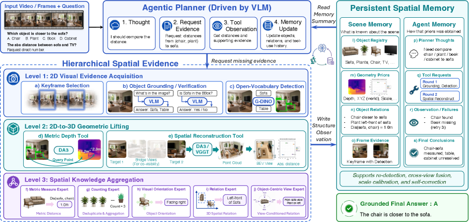

能否把空间推理重构成“围绕连续场景状态做证据收集、几何提升与记忆整合”的过程，而不是对每一帧分别做独立判断？
对当前主题的关键意义在于：如果你关心具身智能、机器人视觉、多视角实验理解或连续空间中的科学观测，这篇很值得补。它也和昨天那篇批评 world model 缺少 persistent state core 的工作形成很强呼应。
方法与关键创新

Figure 2: The pipeline of S-Agent . Instead of answering from an isolated visual impression, S-Agent uses a VLM as a semantic planner, spatial tools and experts as scene-specific e...
Figure 1 : A simplified architecture diagram of DiffusionGemma, with the first two denoising steps shown; see Section ˜ 2.1 for an in-depth description of DiffusionGemma’s architec...
能否让一个代理系统把 PDE 理论、公开约束和以往搜索经验转成可测试的符号程序，并通过自动搜索得到可解释、可继续分析的结构表达，而不仅仅是数值拟合？
对当前主题的关键意义在于：如果你关心科学机器学习、符号归纳、可解释代理，或者想把 AI 真正用于发现可分析的物理规律，这篇很值得读。它也能给聚变、等离子体和多物理场问题的结构化建模带来启发。
方法与关键创新
Figure 1 : ASYS alternates between an outer loop over mathematical structure and an inner loop over continuous parameters. The agent reads problem guidance, previous high-scoring r...

![Figure 1 : ASYS alternates between an outer loop over mathematical structure and an inner loop over continuous parameters. The agent reads problem guidance, previous high-scoring representations, and diagnostic summaries, then revises the representation, the training objective, and the optimizer configuration. The evaluator fits the resulting ansatz by quasi-Newton optimization and scores it using PDE-residual and public-constraint diagnostics. Note the separation of objectives: the inner loop optimizes the agent’s training loss, while the outer loop selects based on the evaluator’s fixed score.](../assets/figures/46675139d35d2543.png)